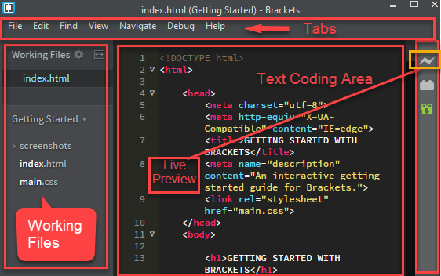
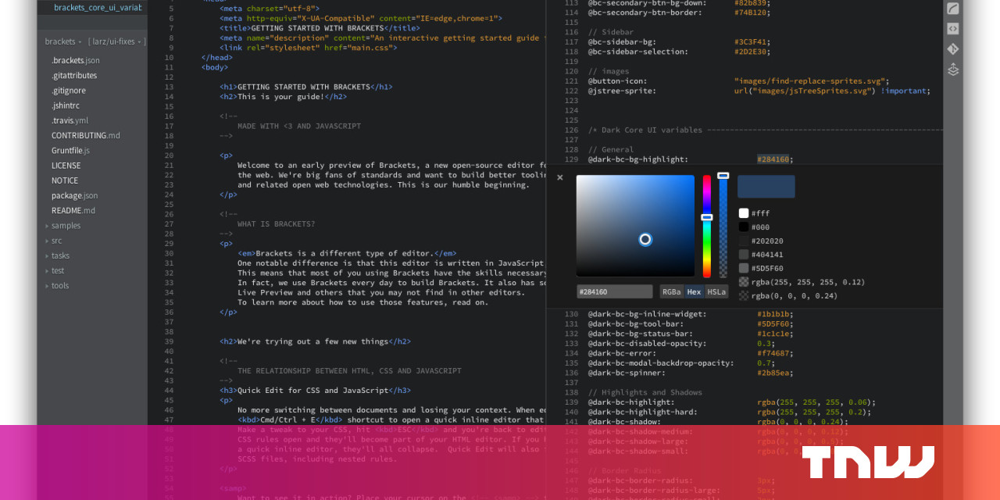
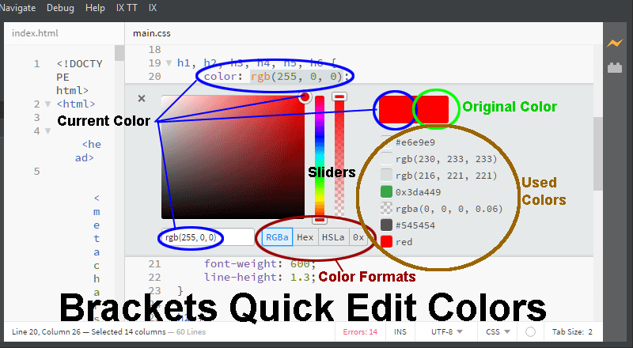
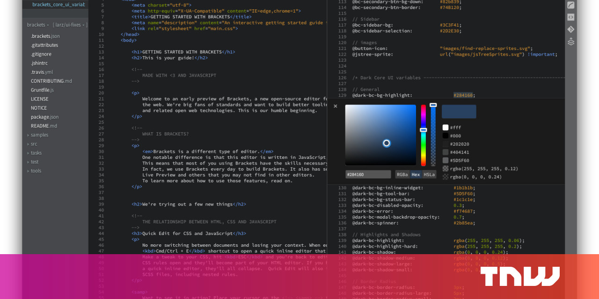
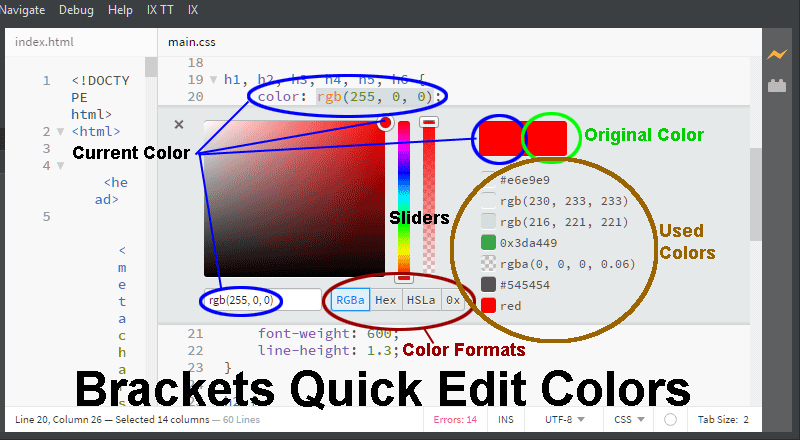

Presentation de brackets et quelques impressions ecran de celui ci:
Vous aimez le design léger de Notepad ++ mais vous voulez un programme spécifiquement axé sur le développement web ? Brackets est la solution parfaite. Il fonctionne sur Windows, Mac et Linux, et est livré avec juste la bonne quantité de fonctionnalités pour vous donner une grande expérience sans vous gêner.
L’éditeur HTML, JavaScript et CSS comprend un aperçu en direct, la prise en charge du préprocesseur, la mise en surbrillance et des extensions gratuites pour ajouter tout ce qui manque. Il a été construit avec le développement web en tête, donc vous savez que vous aurez tout ce dont vous aurez besoin pour créer dans WordPress
Brackets est un bon choix pour les développeurs qui aiment un espace de travail minimal et propre, non surchargé de fonctionnalités inutiles qu’ils n’utiliseront jamais.
 


